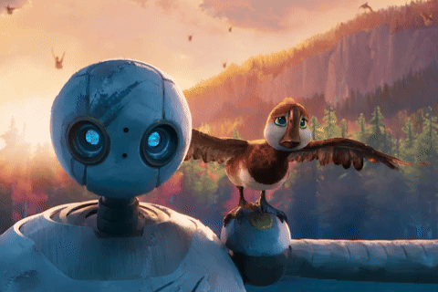

The World Wide Web is a collection of webpages and information worldwide, and is accessed through the internet.
We can thank computer scientist Tim Berners-Lee for inventing the WWW in 1989 - pay respects by tickling him with your cursor. He likes that.
There are two more generations after 3.0. While the aforementioned is widely used now, we experience Web 4.0 in its developmental stages.
Otherwise called the Intelligent or Symbiotic Web, Web 4.0 focuses mainly on advancing AI and machine learning, furthering decentralisation.

The generation after, Web 5.0, is regarded as the next iteration of its predecessor, and is not clearly established given its development still being in its early stage.
Web 5.0 proposes an empowerment of communication between machine and humans, improving upon 4.0's emphasis of machine learning and AI. It also aims to develop upon the domain of blockchain, aiding users in safely controlling their identity in the web.